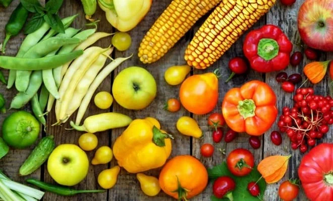

La ensalada es, en términos generales, un plato frío de varias verduras cortadas, mezcladas y aderezadas, fundamentalmente con sal, aceite vegetal y vinagre. Existen multitud de recetas diferentes provenientes de gastronomías de todo el mundo, por lo que realmente se trata de una familia de platos. Las ensaladas suelen servirse como primer plato, aunque también como plato único, antes o después del plato principal, y muchas veces como guarnición.
 |

Ingredientes usados en las ensaladas
Hay varios tipos de ensaladas, entre ellos los más importantes y conocidos son:
1) Ensalada de verduras.
2) Ensalada de frutas.
La base de muchas ensaladas suele ser una verdura de hoja verde como:
las muchas variedades de lechuga: romana, hoja de roble, col china, iceberg, americana, etc.
hierbas de río: canónigos, berros, rúcula, etc.
espinacas o acelgas en crudo.
Entre los elementos de origen animal más comunes, están:
el huevo duro
el queso de diversos tipos (semicurado, cheddar, mozzarella, de búfala)
el pescado en conserva, sobre todo el atún, pero también la melva y la caballa.
el jamón cocido
el pollo asado, adobado, al cilantro, a la plancha o frito.
Igualmente tienen cabida las frutas:
naranjas
manzana, quizás la fruta más habitual en ensalada
pasas, sobre todo si se le quiere dar un aire oriental
melón,
pera,
piña.
Beneficios |
||
| Hidratan y refrescan, ya que más del 90% de la composición de frutas y verduras está dada por agua. Estas son las diez razones para incorporarlas a la dieta diaria: Dan vitalidad, Depuran el organismo, Protegen la piel,s Regulan la función intestinal, Aportan pocas calorías, Cuidan el corazón, Mejoran la digestión. |  | Entre sus beneficios más destacados, podemos decir que el consumo de ensalada de frutas permite purgar tu organismo en su conjunto, purificando tu sangre y facilitando su circulación, previniéndote entonces de sufrir enfermedades de tipo cardiovascular. La presión arterial disminuye en gran medida por el consumo de ensalada de frutas, razón por la cual es más difícil reconocer problemas del corazón en personas que la consumen a diario. |
Ensalada griega:
Con tomate, pepino, cebolla y queso feta cortados en dados, y aceitunas kalamatas (u otras aceitunas negras en conserva, pero las kalamatas dan un toque especial) y aderezado con aceite de oliva y vinagre.
Ensalada malagueña:
Con patata cocida, naranja, bacalao desalado, aceitunas verdes, y aderezado con aceite de oliva, vinagre y sal. Ocasionalmente se adorna con perejil picado muy fino.
Ensalada de col o ‘coleslaw’:
La reconocerás porque la suelen servir en los restaurantes americanos junto con las hamburguesas. Al llevar col cruda, su sabor tiene defensores y detractores a partes iguales. Además del ingrediente que le da nombre, se prepara con zanahoria, lombarda, piña o manzana.

Las ensaladas pueden y deben tener un papel protagonista en una alimentación sana y equilibrada por muchas razones: la más importante es la gran cantidad de efectos beneficiosos que tienen en nuestra salud. Son, además, fáciles de preparar , nutritivas y muy saludables. Las ensaladas pueden resultar platos muy atractivos si las combinamos bien con una buena variedad de colores, sabores y texturas.

Deje su comentario: